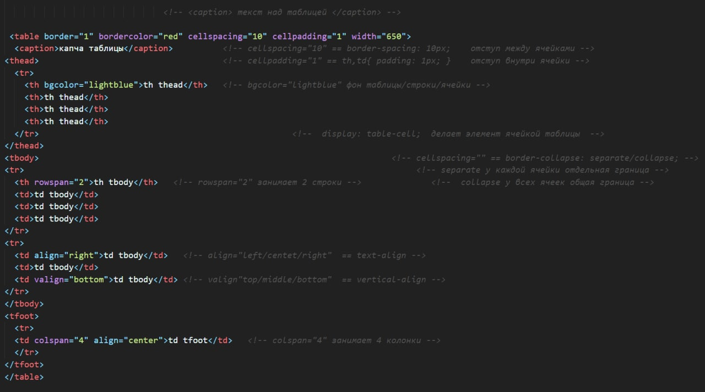

table

display: table

html | css
table | display: table
caption | display: table-caption | первый элемент внутри table
caption-side: top / bottom
text-align: ...
thead | display: table-header-group | группировка для th
tbody | display: table-row-group
tfoot | display: table-footer-group | всегда отображается снизу
colgroup | display: table-column-group | стилизация столбцов
col | display: table-column |
tr | display: table-row
td, th | display: table-cell
cellspacing | border-spacing | отступы между ячейками
cellpadding | th,td{padding} | отступы внутри ячеек
empty-cells: show / hide | границы и фон вокруг пустых ячеек
separate collapse
border-collapse: ┌----┐┌----┐ ┌----┐----┐
└----┘└----┘ └----┘----┘
colspan: 2
colspan | объединение ячеек ┌----┐┌----┐ > ┌-------┐
rowspan | объединение ячеек └----┘└----┘ > └-------┘
col - стилизация столбцов
<table>
<col width="20%">
<col width="80%">
<tr>
...
</tr>
<tr>
...
</tr>
</table>
В HTML-таблицах для стилизации столбцов используется тег <col>. Тег пишется в начале таблицы и не закрывается. Первый col в разметке влияет на каждую первую ячейку в рядах таблицы, то есть, на первый столбец. Следующий <col> будет стилизовать второй столбец и так далее.
В CSS-таблицах так же: внутри таблицы создать пустой тег и задать ему display: table-column (это аналог тега col). Правила для него будут применяться к первому столбцу, следующий элемент с table-column стилизует второй столбец и так далее.
таблица
table
| . | . | . | . |
|---|---|---|---|
| valign | . | . | . |
| . | . | ||
| align | |||
table-row
display: table-row - контейнер для ячеек, практически не имеет собственного отображения. Для неё можно только задавать цвет фона.
cellpadding - отступы внутри ячеек
атрибут cellpadding - отступы внутри ячеек, но лучше его не использовать, а задавать отступы с помощью CSS.
cellspacing / border-spacing отступы между ячейками
Отступы между ячейками не работают с border-collapse: collapse, ведь рамки ячеек в этом режиме «склеены» и их не разорвать.